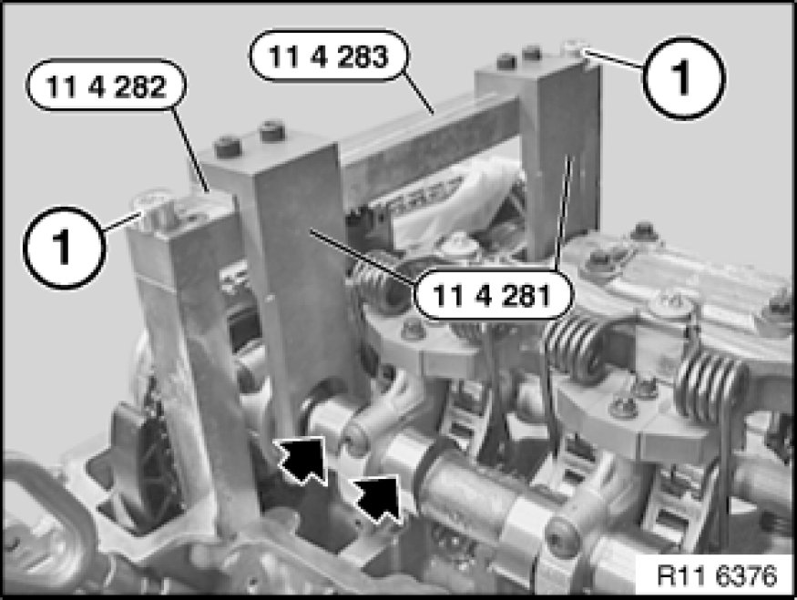

Removing and Installing/Replacing Inlet and Exhaust Adjustment Units (N52K)
11 36 046 - Removing and installing/replacing inlet and exhaust adjustment units (N52K)

Special tools required:
- 11 4 280 11 4 280 Gauge
- 11 4 281 11 4 280 Gauge
- 11 4 282 11 4 280 Gauge
- 11 4 283 11 4 280 Gauge

Necessary preliminary tasks:
- Remove cylinder head cover Service and Repair
- Check timing Testing and Inspection

Important!
Install special tool 11 4 280 11 4 280 Gauge to release the central bolts on the inlet and exhaust adjustment units and camshafts.
Fit special tool 11 4 283 11 4 280 Gauge with screws (1).
Fit special tool 11 4 281 11 4 280 Gauge on special tool 11 4 283 11 4 280 Gauge.
Important!
Fit special tool 11 4 282 11 4 280 Gauge underneath on side of inlet camshaft.
Release chain tensioner (2).
Tightening torque 11 31 6AZ 11 31 Camshaft.
Release central bolts on inlet and exhaust adjustment units (1).
Tightening torque 11 36 1AZ 11 36 Variable Camshaft Control VANOS.
Installation:
Replace central bolts.
Note:
Picture in CAD and does not show special tools.
Remove exhaust adjustment unit (1) from exhaust camshaft.
Remove inlet adjustment unit (2) from inlet camshaft.
Installation:
To facilitate removal and installation of the inlet and exhaust adjustment units, turn the sensor gears at the opening downwards.

Important!
Risk of mixing up the inlet and exhaust adjustment units.
Danger of engine damage!
Inlet and exhaust adjustment units are different.
VANOS is marked with AUS/EX for the exhaust camshaft.
VANOS is marked with EIN/IN for the inlet camshaft.
Sensor gears can be fitted alternatively.
Position inlet and exhaust adjustment units on camshafts.
Installation position of inlet and exhaust adjustment units can be freely selected.
Insert central bolts (1).
Tightening torque 11 36 1AZ 11 36 Variable Camshaft Control VANOS.
Installation:
Replace central bolts.
Important!
Install special tool 11 4 280 11 4 280 Gauge to secure the central bolts on the inlet and exhaust adjustment units and camshafts.
Note:
Picture in CAD and does not show special tools.
Important!
Incorrect installation possible!
Press clamping rail (1) by hand against guide rail and make sure timing chain is guided in clamping rail (1).
Note:
Schematic representation of removed timing chain module.
Adjust valve timing Adjustments.
Fit chain tensioner Service and Repair.

Assemble engine.